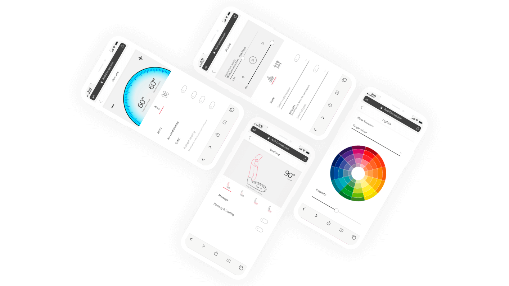
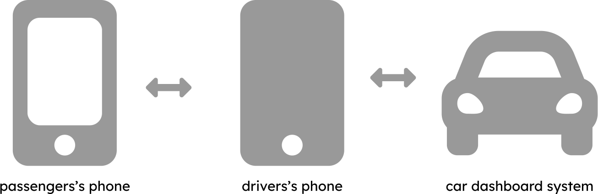
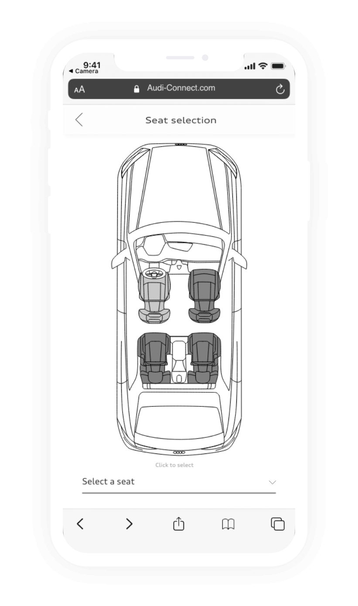
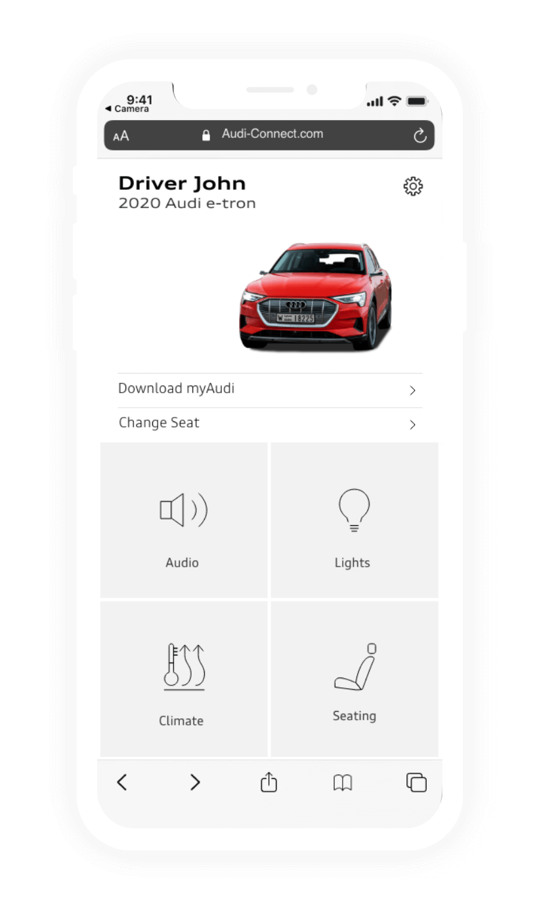
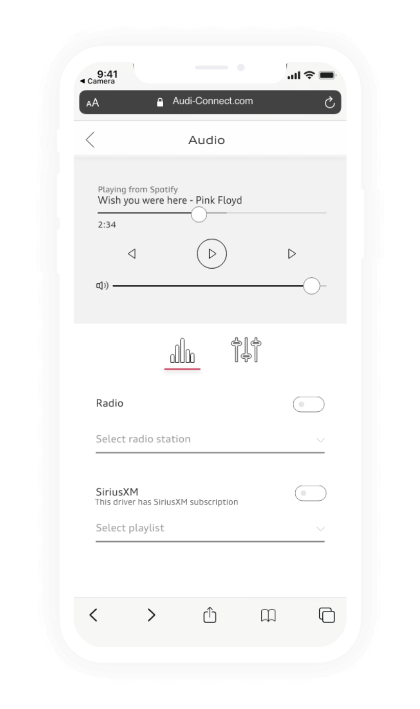
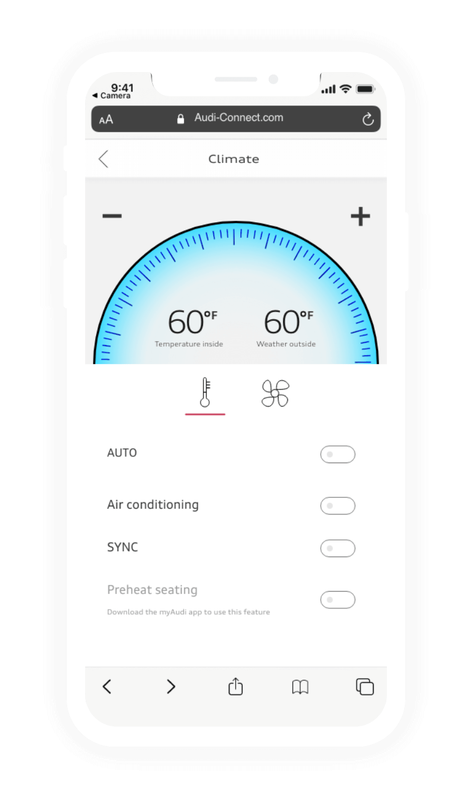
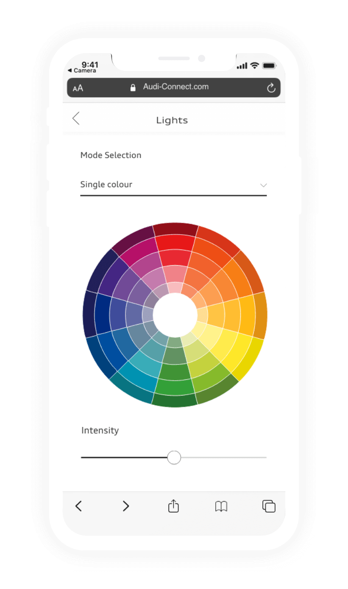
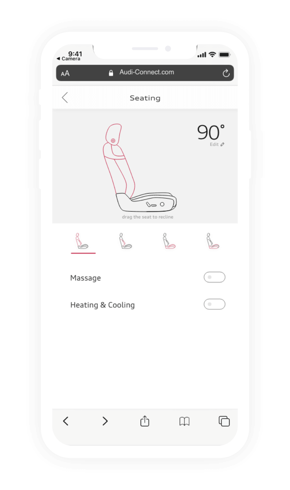

Powered by Audi Canada and BIMM, RED a competition inspired by the theme “Mobility as a Service”.
We looked at the existing platform Audi has, myAudi. Now the app is just for the car owners and does not allow for passengers to access all the premium features inside the car from their phones.Unfortunately, accessing premium features like seat massage is awkward, and most customers probably won’t even realize the features exist without being prompted.
MyAudi - native app
Web application
To address this problem my team created web application prototype to onboard users with myAudi app. With the solution, a customer can simply scan a QR code from the driver, and instantly have access to all of these features right in front of them on their phone. With an intuitive design, it is obvious what you can control, and what features are available.
The application has been designed with brand consistency to the native mobile app with some adaptations to better fit within a web app format. There are four main options to choose from in the web application: audio, lights, climate, and seats.
The myAudi application on the driver’s phone will act as a mediator between the rideshare and the car. This ensures the driver has full control over the features accessed over the duration of the trip. For example, it would be able to set tolerances to things like the music volume. The driver would also be able to set a password for additional privacy. Also, seat selection is important for the hierarchy to solve the conflict between two or more paired devices.
This data can be very useful for knowing what preferences a person likes when they ride, what features are used most often, and how to best market their features to prospective buyers. This data also lets Audi expand their knowledge of their consumer base, answering questions such as who uses an Audi as a passenger, and what is Audi’s main demographic of people who use Audi in a rideshare.
There are many input methods that could be employed in the future state. Building on the system we developed instead of the rideshare scanning a QR code more seamless input methods could be deployed like voice or face recognition. These input methods could offer a more seamless experience having rideshare preferences sync as soon as they enter the car (this would require the rideshare to have MyAudi).
Having end-user anonymously access all the premium features during their rideshare experience builds up trust to the Audi brand. In the future people might get so familiar with the digital service, so it may become the reason why they would use audi cars to get somewhere.
Seat selection page
Main page
Audio and Radio page
Climate control page
Light control page
Seating page
Teammates: Alex Borthwick and Josh Vandenbor